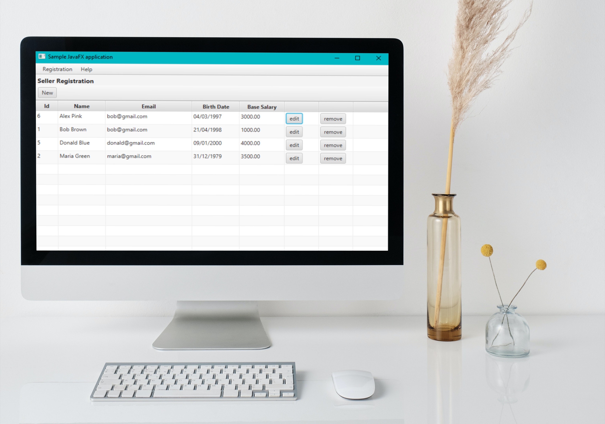
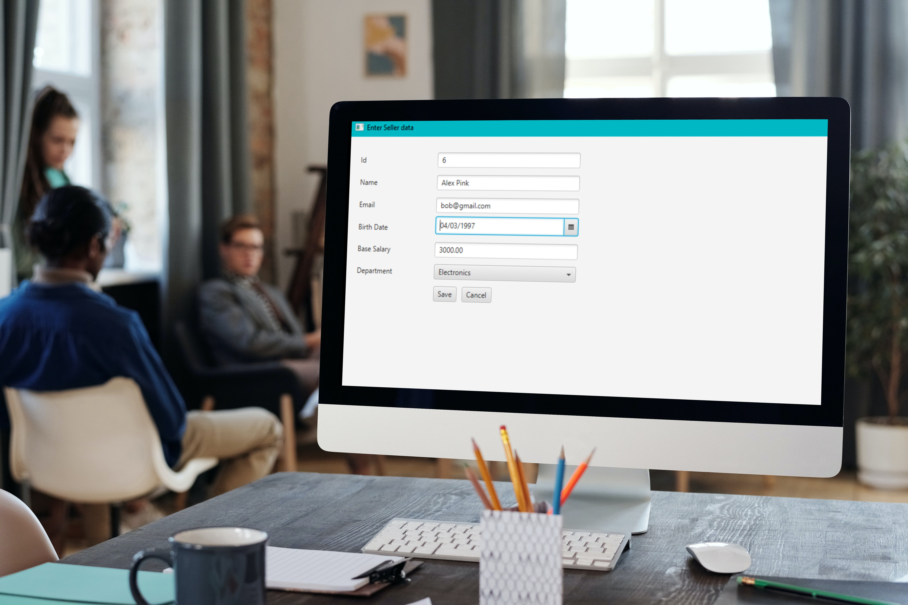

Aplicação Desktop com JavaFX e JDBC
Descrição do projeto
Quando estava fazendo o curso de Java do Nelio Alves, foi apresentado alguns projetos que poderíamos realizar. O Sistema de Departamento foi um deles, e o que mais me atraiu em fazer ele foi poder conectar o banco de dados MySQL pelo JDBC. Além disso, é usado o JavaFX, uma biblioteca de GUI (Interface Gráfica do Usuário) que permite criar uma variedade de aplicativos de desktop.
A aplicação consiste em um sistema para cadastrar vendededores e departamentos, podendo relacionar eles. Tanto o vendedor quando o departamento têm suas informações próprias. Por exemplo, no caso do vendedor temos id, email, nome, entre outros.
O maior desafio em construir a aplicação foi com certeza a parte gráfica, visto que até o momento eu não tinha muita experiência com isso em Java. Porém, aos poucos fui aprendendo como interagir com os objetos visuais. Além disso, consegui entender e aprofundar um pouco mais em excessões e expressões lambda.
Clique aqui para acessar este projeto no Github!
← Portfólio
← Home